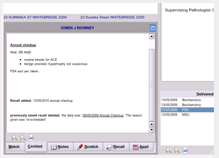

Filing Normal Results
Before filing you may wish to view the context in which you or another person in your practice ordered the test, so click on the 'context' tab on the tabbed list at the bottom left of the inbox:

If you are happy with the result and it requires no action, clicking the 'File OK' button will save that result to the patients record in the database, and remove that delivered test or letter from the list, automatically showing the next result for you.
If all delivered results or letters for the current patient have been dealt with, the program will automatically move on to the next available patient.
If all patients in one list have been dealt with, then the program will automatically move onto the next non-empty list and the process will continue until the the inbox is empty.
Once the program has learnt to match deliveries to user synonyms then in most cases filing your HL7 is simply a matter of clicking the 'File as OK' button.